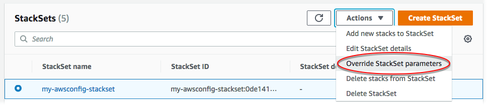

Terjemahan disediakan oleh mesin penerjemah. Jika konten terjemahan yang diberikan bertentangan dengan versi bahasa Inggris aslinya, utamakan versi bahasa Inggris.
Timpa parameter pada instans tumpukan
Dalam kasus tertentu, Anda mungkin ingin instans tumpukan di Wilayah atau akun tertentu memiliki nilai properti yang berbeda dari yang ditentukan dalam set tumpukan itu sendiri. Misalnya, Anda mungkin ingin menentukan nilai yang berbeda untuk parameter yang diberikan berdasarkan apakah akun digunakan untuk pengembangan atau produksi. Untuk situasi ini, AWS CloudFormation mengizinkan Anda untuk menimpa nilai parameter dalam instans tumpukan oleh akun dan Wilayah. Anda dapat menimpa nilai parameter templat ketika Anda pertama kali membuat instans tumpukan, dan Anda dapat menimpa nilai parameter untuk instans tumpukan yang ada. Anda hanya dapat mengatur parameter yang sebelumnya telah Anda timpa dalam instans tumpukan kembali ke nilai yang ditentukan dalam set tumpukan.
Penimpaan nilai parameter berlaku untuk instans tumpukan di akun dan Wilayah yang Anda pilih. Selama pembaruan set tumpukan, nilai parameter apa pun yang diganti untuk instance tumpukan tidak diperbarui, tetapi mempertahankan nilai yang diganti.
Anda hanya dapat menimpa nilai parameter yang ditentukan dalam set tumpukan; untuk menambah atau menghapus parameter itu sendiri, Anda perlu memperbarui templat set tumpukan. Jika Anda menambahkan parameter ke templat set tumpukan, maka sebelum Anda dapat menimpa nilai parameter tersebut dalam instans tumpukan Anda harus terlebih dahulu memperbarui semua instans tumpukan dengan parameter dan nilai baru yang ditentukan dalam set tumpukan. Setelah semua instans tumpukan telah diperbarui dengan parameter baru, Anda kemudian dapat menimpa nilai parameter dalam instans tumpukan individu seperti yang diinginkan.
Untuk mempelajari cara menimpa nilai parameter set tumpukan ketika Anda membuat instans tumpukan, lihat Tambahkan tumpukan ke set tumpukan.
Topik
Ganti parameter pada instance tumpukan menggunakan AWS Management Console
Buka AWS CloudFormation konsol di https://console.aws.amazon.com/cloudformation
. -
Dari panel navigasi, pilih StackSets. Pada halaman StackSets , pilih set tumpukan yang Anda buat di Buat set tumpukan. Dalam panduan tersebut, kita membuat set tumpukan bernama
my-awsconfig-stackset. -
Dengan set tumpukan yang dipilih, pilih Override StackSet parameter dari menu Actions.
 -
Pada halaman Atur opsi deployment, berikan akun dan Wilayah untuk instans tumpukan yang parameternya ingin Anda timpa.
AWS CloudFormation akan menerapkan tumpukan di akun yang ditentukan dalam Wilayah pertama, lalu beralih ke yang berikutnya, dan seterusnya, asalkan kegagalan penerapan Wilayah tidak melebihi toleransi kegagalan yang ditentukan.
-
[Izin yang dikelola sendiri] Untuk Target deployment pilih Deploy tumpukan di akun. Tempelkan beberapa atau semua ID akun target yang Anda gunakan untuk membuat set tumpukan Anda di Buat set tumpukan.
[Izin yang dikelola layanan] Untuk Target deployment, pilih akun di organisasi Anda untuk men-deploy.
-
Pilih Deploy ke unit organisasi (OU). Pilih satu atau lebih OU target yang Anda gunakan untuk membuat set tumpukan Anda di Buat set tumpukan. Nilai parameter yang ditimpa hanya berlaku untuk akun yang saat ini berada di OU target dan OU anak. Akun yang ditambahkan ke OU target dan OU anak di masa mendatang akan menggunakan nilai default set tumpukan dan bukan nilai yang ditimpa.

-
Pilih Deploy ke akun. Tempelkan beberapa atau semua ID OU target atau ID akun yang Anda gunakan untuk membuat set tumpukan Anda di Buat set tumpukan.

-
-
Untuk Wilayah deployment, tambahkan satu atau lebih Wilayah tempat Anda telah men-deploy instans tumpukan untuk set tumpukan ini.
Jika Anda menambahkan beberapa Wilayah, urutan Wilayah dalam Tentukan wilayah menentukan urutan deployment mereka.
-
Untuk Opsi deployment:
-
Untuk Akun bersamaan maksimum, jaga agar nilai default tetap Angka dan 1.
Ini berarti bahwa AWS CloudFormation menyebarkan tumpukan Anda hanya dalam satu akun pada satu waktu.
-
UntukToleransi kegagalan, jaga agar default tetap Angka dan 0.
Ini berarti bahwa maksimum satu penyebaran tumpukan dapat gagal di salah satu Wilayah yang Anda tentukan sebelum AWS CloudFormation menghentikan penerapan di Wilayah saat ini, dan membatalkan penerapan di Wilayah yang tersisa.
Pilih Berikutnya.
-
-
-
Pada halaman Specify Overrides, periksa parameter Frekuensi lalu pilih Override StackSet value dari menu Edit override value.

-
Dalam Ganti nilai StackSet parameter, pilih 6 jam untuk parameter Frekuensi, dan pilih Simpan perubahan. Anda menginstruksikan AWS CloudFormation untuk menimpa nilai parameter Frekuensi dan menggunakan 6jam untuk semua instans tumpukan untuk akun tertentu di Wilayah tertentu. Pilih Berikutnya.
catatan
Untuk menyetel parameter yang diganti kembali menggunakan nilai yang ditentukan dalam kumpulan tumpukan, periksa semua parameter dan pilih Set to StackSet value dari menu Edit override value. Melakukannya menghapus semua nilai yang ditimpa setelah Anda memperbarui instans tumpukan.
-
Pada halaman Tinjau, tinjau pilihan Anda. Perhatikan bahwa parameter Frekuensi menampilkan nilai dalam kolom Timpa nilai, menunjukkan bahwa nilainya telah ditimpa di tingkat tumpukan.
Sebelum Anda dapat mengganti parameter untuk instance tumpukan ini, Anda harus mengisi kotak centang di area Kemampuan untuk mengetahui bahwa beberapa sumber daya yang Anda buat dengan kumpulan tumpukan mungkin memerlukan sumber daya dan izin IAM baru. Untuk informasi selengkapnya tentang izin yang berpotensi diperlukan, lihat Mengakui sumber daya IAM di AWS CloudFormation templat dalam panduan ini. Saat Anda siap, pilih Kirim.
-
AWS CloudFormation mulai memperbarui instance tumpukan Anda. Lihat kemajuan dan status instans tumpukan di halaman detail set tumpukan yang terbuka saat Anda memilih Kirim.
Ganti parameter pada instance tumpukan menggunakan AWS CLI
Ketika bertindak sebagai administrator yang didelegasikan, Anda harus mengatur parameter --call-as ke DELEGATED_ADMIN setiap kali Anda menjalankan perintah StackSets.
--call-asDELEGATED_ADMIN
Jalankan update-stack-instances AWS CLI perintah, tentukan. --parameter-overrides Untuk informasi selengkapnya tentang menentukan--parameter-overrides, lihat Parameterdi Referensi AWS CloudFormation API, dan update-stack-instancesdi ReferensiAWS CLI Perintah.
Dalam perintah contoh yang ditunjukkan di sini, kita mengubah frekuensi pengiriman snapshot default untuk konfigurasi saluran pengiriman dari TwentyFour_Hours ke Twelve_Hours untuk instance stack yang ditentukan.
-
Jalankan perintah berikut. Untuk
--stack-set-name, tentukanmy-awsconfig-stacksetnama set tumpukan.Atur toleransi kegagalan dan akun bersamaan maksimum dengan mengatur
FailureToleranceCountke0, danMaxConcurrentCountke1dalam parameter--operation-preferences, seperti yang ditunjukkan dalam contoh berikut. Untuk menerapkan persentase, gunakanFailureTolerancePercentageatauMaxConcurrentPercentage. Untuk panduan ini, kita menggunakan jumlah, bukan persentase.catatan
Nilai
MaxConcurrentCounttergantung pada nilaiFailureToleranceCount.MaxConcurrentCountpaling banyak satu lebih dariFailureToleranceCount.[Izin yang dikelola sendiri] Berikan ID akun yang ingin Anda timpa nilai parameternya pada instans tumpukan.
aws cloudformation update-stack-instances --stack-set-namemy-awsconfig-stackset--parameter-overrides ParameterKey=MaximumExecutionFrequency,ParameterValue=TwentyFour_Hours\\,Twelve_Hours--operation-preferencesFailureToleranceCount=0,MaxConcurrentCount=1--accounts '["012345678901"]' --regions '["eu-west-1", "us-west-2"]'[Izin yang dikelola layanan] Berikan ID root organisasi, ID OU, atau ID AWS Organizations akun yang ingin Anda ganti parameternya pada instance tumpukan. Dalam contoh ini, kita menimpa nilai parameter untuk instans tumpukan di semua akun di OU dengan ID
ou-rcuk-1x5j1lwo.Nilai parameter yang ditimpa hanya berlaku untuk akun yang saat ini di OU target dan OU anaknya. Akun yang ditambahkan ke OU target dan OU anaknya di masa mendatang akan menggunakan nilai default set tumpukan dan bukan nilai yang ditimpa.
aws cloudformation update-stack-instances --stack-set-namemy-awsconfig-stackset--parameter-overrides ParameterKey=MaximumExecutionFrequency,ParameterValue=TwentyFour_Hours\\,Twelve_Hours--operation-preferencesFailureToleranceCount=0,MaxConcurrentCount=1--deployment-targets OrganizationalUnitIds='["ou-rcuk-1x5j1lwo"]' --regions '["eu-west-1", "us-west-2"]' -
Verifikasi bahwa nilai parameter Anda berhasil diganti pada instance tumpukan dengan menjalankan
describe-stack-set-operationperintah untuk menampilkan status dan hasil operasi pembaruan Anda. Untuk--operation-id, gunakan ID operasi yang dikembalikan oleh perintahupdate-stack-instancesAnda.aws cloudformation describe-stack-set-operation --operation-idoperation_ID